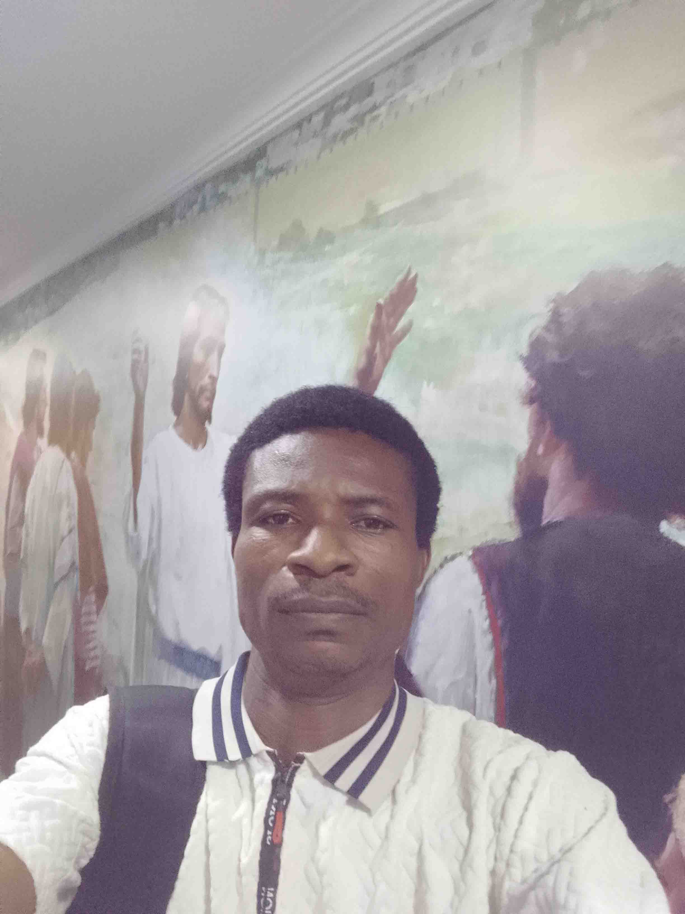

WDD 130 | Daniel Kale

My name is Daniel Kale, and I live in Ikorodu, Lagos, Nigeria. I am a beginner web designer who has recently started learning how to design and build websites. Technology has always fascinated me, and I am excited to be taking my first steps into the world of web design and development. I am deeply interested in technology and truly enjoy improving my skills with each project I take on. Every new concept I learn motivates me to keep growing, and I am excited to continue expanding my knowledge. I look forward to becoming a better web designer in the future and building meaningful digital experiences.